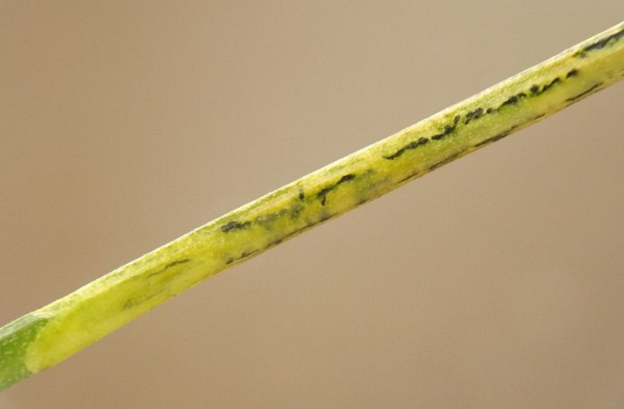
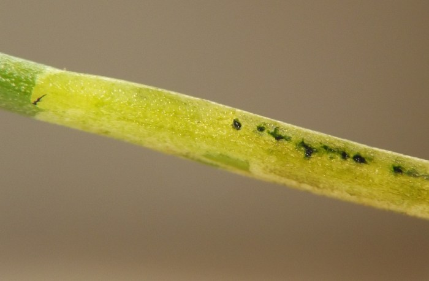
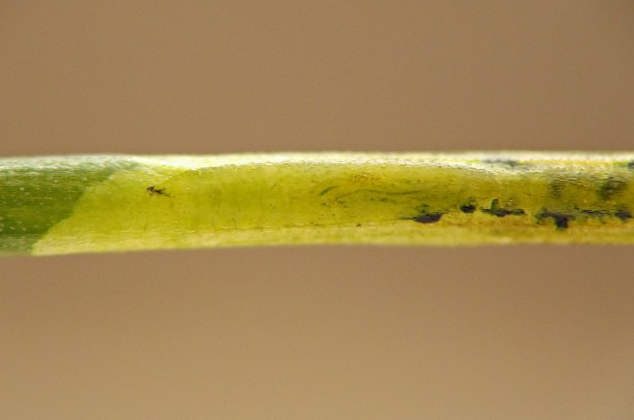
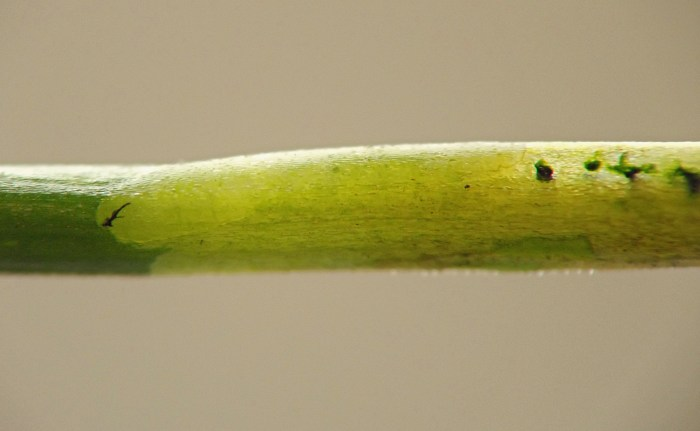
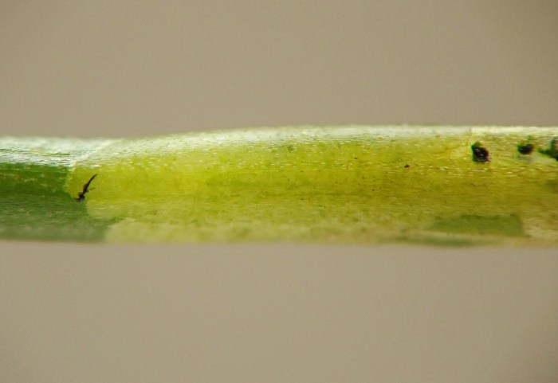
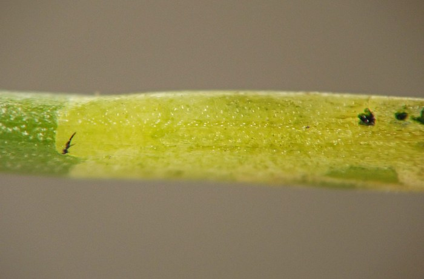
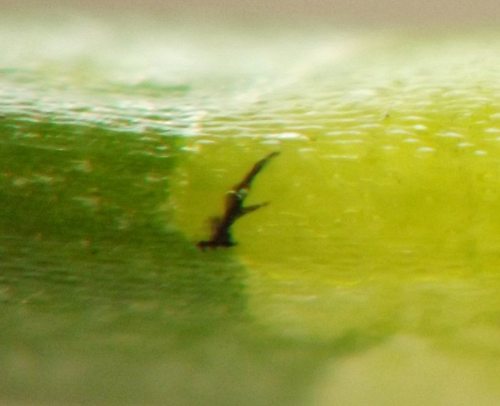
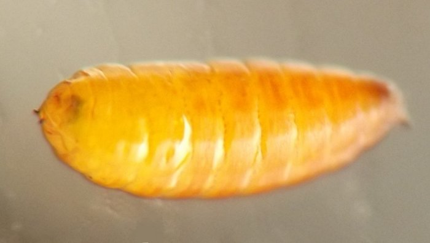
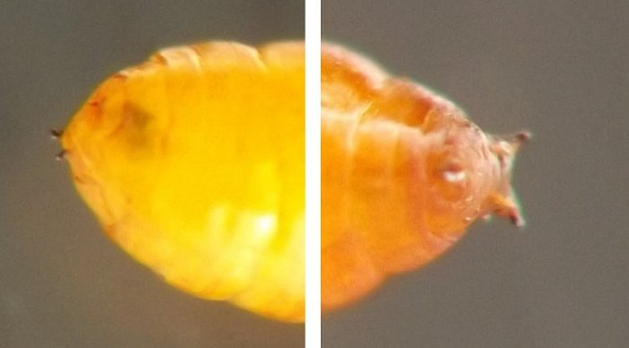
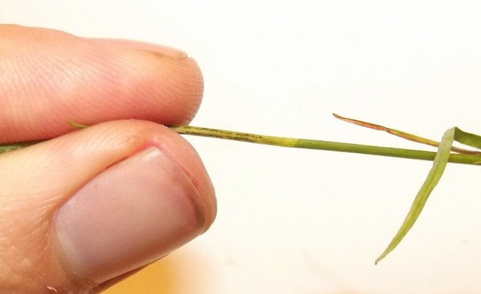

Stem miner (Diptera: Agromyzidae) in Campanula
| Record no.: | 0114 |
|---|---|
| Feeding guild: | Stem miner |
| Taxonomy: | Diptera: Agromyzidae: Phytomyzinae: cf. Liriomyza sp. |
| Stages observed: | trace, larva, puparium |
| Distribution observed: | IA |
| Hosts in Campanula: | C. rotundifolia (harebell) |
The larva of this species forms a shallow, externally visible mine in the stem of the host. In a photographed example, the mined tissue was yellowish in color, contrasting with the green color of unaffected stem tissue, and the mine contained broken lines of lumpy dark greenish frass. The tiny orange puparium was formed outside the mine. It appears that the puparium is the overwintering stage. The characteristics of the larval cephaloskeleton clearly place it in the subfamily Phytomyzinae, and after examining photos of life stages and plant damage, Eiseman (2018) suggested an identification of Liriomyza sp., referring to "a species of this genus already known to feed on Campanula"; Eiseman (2022) similarly lists this miner as a Liriomyza.

 Prev
Prev
{kind=link}
{kind=link}

{kind=link}

{kind=link}

{kind=link}

{kind=link}

{kind=link}

{kind=link}

{kind=link}

{kind=link}

Coll. 08/02/18, photos of stem mine and active larva same day (01, 13-15, 17-19, 20), puparium formed by 08/04/18, photos of puparium on 08/04/18 (04-05). All specimens above from Iowa, USA.
- Eiseman, C.S. 2018. Comment on contributor post at BugGuide.net. Retrieved November 28, 2023 from https://bugguide.net/node/view/1569907.[return to in-text citation]
- Eiseman, C.S. 2022. Leafminers of North America, 2nd edition. Self-published e-book. Available from the author at https://charleyeiseman.com/leafminers/.[return to in-text citation]
Page created: February 10, 2026. Last update: none